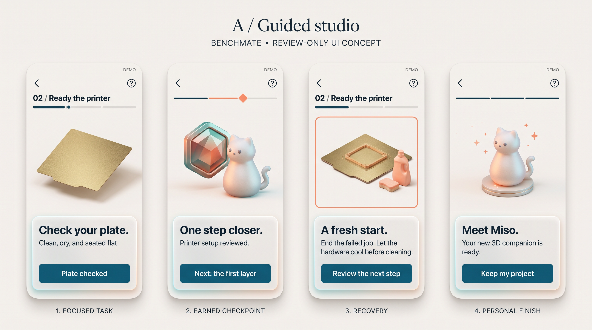
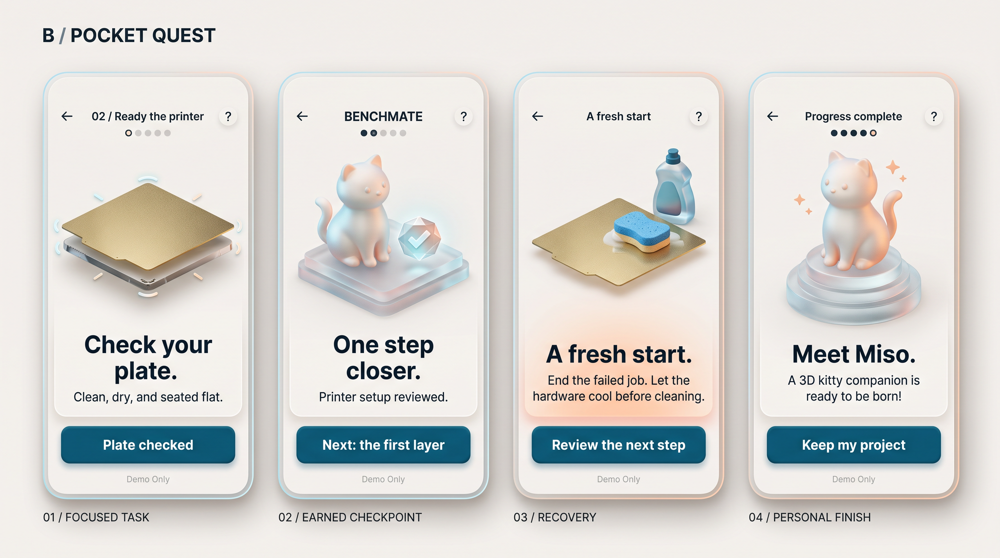

One step.
One clear action.
Two generated iPhone concepts respond to your feedback: stronger contrast, fewer decisions, a beautiful 3D object and satisfying progress. These are reference boards. No application code has changed.
| Compare | A · Guided Studio | B · Pocket Quest |
|---|---|---|
| Feel | Quiet, precise, studio-like | Playful and encouraging |
| Hierarchy | Instruction and action in a low frosted sheet | Bold centered task; strong separate action |
| Progress | Thin path and faceted seal | Compact dots and earned check token |
| Refinement | Reduce large reward and competing chapter heading | Correct progress dots; quiet excess rim glow |
A / Guided Studio
A calm physical workspace, a readable lower instruction panel, and one dominant teal action.

B / Pocket Quest Recommended for review
More expressive hierarchy, a sculptural frosted stage, and a small earned reward. The warm recovery accent signals a change without punishment.

What will be corrected before implementation
The generated progress dots and chapter labels need consistent state logic. The floating plate must become a clear, relevant schematic. Completion wording must describe the demo accurately. Rewards acknowledge recorded checks; they do not certify a safe printer or successful physical print. Strong contrast must be measured on the actual implementation.
Necessary physical checks remain as focused microsteps. Help collects sources and secondary details. Model-view controls, equipment cards and save/progress menus do not compete with the main action.